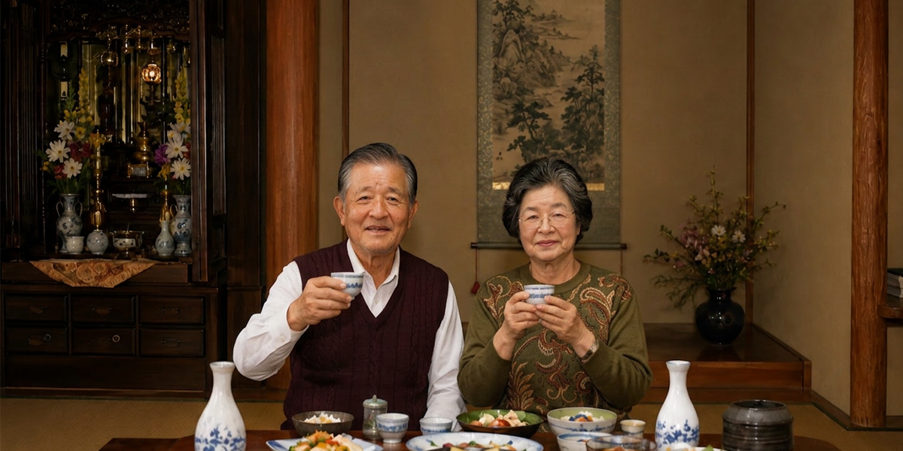

昭和の夏は、今ほど気温が高かったわけではない。
それでも子どもの目には、太陽は大きく、アスファルトは白く光って見えた。
市民プールを出たばかりの体には、まだ水の冷たさが残っている。
けれど、濡れた髪は夏の風ですぐ乾いていった。
風が吹いても少しぬるくて、肩にかけたタオルだけが重かった。
あの頃の夏休みの帰り道は、目を細めながら歩くしかなかった。
どこからか歌が聞こえてくる。
「もーもたろさん、もも太郎さん♪」
今思えば、あの音は「近づいてくる」というより、私たちのほうが近づいていったのだと思う。
プール帰りの子どもは、音のするほうへ自然と吸い寄せられていく。
お腹も、気持ちも、我慢がきかなかった。
軽トラックが止まる場所は、いつも決まっていた。
曜日によって中央の市民プールだったり、南区のほうだったり。
子どもたちは、それぞれの場所で「あそこに来る」と分かっていて、私たちは帰り道の流れのまま列に混じった。
列の向こうに祖父の顔が見える。
祖父はいつもにこにこしていて、わらび餅を忙しそうに作っていた。
きびだんごも人気だったが、夏はやっぱり、わらび餅が一番売れた。
最中の皮にはさんだ、あのわらび餅。
手に持つとひんやりして、かじると甘く冷たい。
プールの水の冷たさとは違う、舌の上だけが救われるような感覚だった。
あの味を思い出すだけで、福岡の夏の光が戻ってくる。
祖父の店がいつも子どもたちでいっぱいだったのには、理由があった。
それは、おまけのゲームだった。
パチンコの玉が入る場所によって「大当たり」「あたり」「はずれ」が決まる。
お菓子を買った後にも、もう一つ楽しみが待っていた。
子どもたちは、その小さな遊びに夢中になった。
人の波が途切れる時間がある。
さっきまであんなにいた子どもたちが、いつの間にかいなくなり、急に静かになる。
そんな時、祖父は私にだけ少し声を落として言った。
「友達と分けて食べなさい」
そう言って包みを渡してくれる。
だから友達は、なんだか得した顔で笑った。
私は、おまけのゲームをしたことがない。
孫の私は買うことがなかったからだ。
それでも祖父は、新しく作ったゲーム台があると必ず私に聞いた。
「これ、面白いか？」
私が「楽しい」と言うと、次にはまた違う台になっていた。
祖父は、子どもが何を喜ぶのかを本気で考えていたのだと思う。
商売というより、遊びを作る人だった。
帰り道、包みを開けて、友達と分けて食べた。
白く眩しい道を歩きながら、口の中だけが冷たくて、甘かった。
あの頃は三十度を超えるだけで「今日は暑いねえ」と言っていた。
それでも夕方になれば山のほうから風が吹き、昼間の熱気を少しずつ運んでいってくれた。
あの歌が聞こえてきた瞬間の気持ちだけは、変わらない。
音と光と味、そして夏の帰り道にいた人の笑顔。
これが私の小学二年生、夏の記憶だ。
祖父、理（おさむ）は信心深い人だった。
毎月、鏡山の斜面に並ぶお地蔵さんへ、一円玉を一枚ずつ供えながら、静かに祈りを捧げて歩いていた。
照りつける真夏の日もあれば、虹ノ松原から吹き上げる潮風が頬を打つ日もあった。
それでも祖父は、どんな季節でも欠かすことなく手を合わせ続けた。
岸岳の末裔の家に生まれた祖父は、法安寺奥の院へも、よく足を運んだ。
そこが「水攻め」の悲劇の地であり、多くの人々が命を落とした場所だと信じていた。
小学生だった私は、何度かその背中を追った。
奥の院へ供える水を重たい容器に入れて運んだこともある。
あの頃は、その意味など何も分からなかった。
けれど今思えば、それが私と岸岳との最初の出会いであり、
後に波多氏や「オオト様」を追い続けることになる始まりだったのだと思う。
祖父と祖母は、いつも一緒だった。
鏡山のお地蔵さんへお参りに行く日も、岸岳の法安寺奥の院へ向かう日も、
祐徳稲荷へ出かける日も、二人は決まって並んで歩いていた。
小学生だった私は、その後ろをついて歩くのが当たり前だった。
だから祖父との外出といえば、遊園地や動物園ではなく、決まって寺や神社だった。
祐徳稲荷へ行けば、祖父は必ずと言っていいほど鯉料理を食べた。
子どもの私には、その美味しさはまったく分からなかった。
それでも、お参りの帰りに立ち寄るいつもの寿司屋だけは楽しみだった。
昭和という時代がおおらかだったのか、祖父はそこで酒を一杯、二杯と楽しんでいた。
その横に、小学生の私が当たり前みたいに座っていた。
（笑）
祖父が亡くなって十年以上が過ぎた。
それでも、あの頃の風の匂い、寺社に流れていた静かな空気、
そして祖父母と歩いた穏やかな時間は、今も私の中に残っている。
岸岳のこと。
波多氏のこと。
そして、『オオト様』のこと。
私がこうして歴史を調べ、言葉を紡いでいるのは、きっと祖父から受け継いだ「祈り」なのだろう。
祖父母が歩いた道を、今は私が歩いている。
これが、祖父母と歩いた日々の記憶だ。